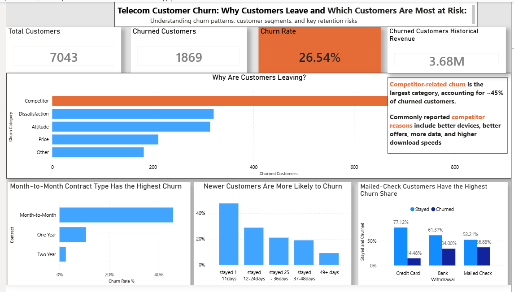

Telecom Customer Churn Analysis
View Detailed Report
Back To Portfolio
Project Overview
Customer churn is one of the biggest challenges faced by telecom companies.
Losing existing customers directly impacts revenue and increases acquisition costs.
This project analyzes customer data to identify churn patterns and uncover the factors that influence customer retention.
Goal
I identify the key drivers of customer churn and provide insights that can help telecom companies improve customer retention.
Process
- I cleaned and prepared customer records using Excel to ensure the dataset was ready for analysis.
- I used SQL to answer business questions around customer churn, contract types, payment methods, customer tenure, and service usage.
- I segmented customers based on their behavior to identify groups with higher churn risk.
- I analyzed how customer contracts, payment preferences, and service subscriptions influenced retention.
- I built an interactive Power BI dashboard to visualize churn patterns and support decision-making.
- I translated the findings into practical recommendations that could help improve customer retention.
Key Insights
- I discovered that customers on month-to-month contracts were significantly more likely to leave than customers on longer-term contracts.
- I found that customers with shorter tenure and higher monthly charges showed stronger churn tendencies.
- I identified payment methods that were associated with higher customer churn rates, suggesting possible customer experience issues.
- I observed that many customers left without providing clear reasons, making customer feedback an important area for improvement.
- I discovered that some recently acquired customers were already generating high revenue but were still leaving early, creating a retention opportunity.
- I found that customers with fewer subscribed services generally had a higher likelihood of churning compared to customers using multiple services.
Dashboard Preview
